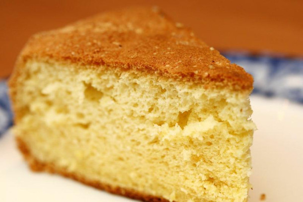

Nada más fácil de hacer y recordar con facilidad las cantidades. Ideal para la merienda después del cole o acompañar unos buenos mates. Siempre utilizamos la misma taza como referencia. Yo utilicé una de 200 cc. Espero les guste y se animen a prepararlo. Lo hice saborizado con limón pero eso es a gusto. Pueden variarlo como más les guste. Esta receta es perfecta para principiantes.
INGREDIENTES
- 1 taza de aceite de girasol.
- 2 tazas de azúcar.
- 3 tazas de harina leudante.
- 4 huevos grandes (a temperatura ambiente).
- 1 cucharada de esencia de limón o vainilla.
PROCEDIMIENTO
- Poner los 4 huevos en un bowls.
- Ahora debemos agregar el aceite.
- Agregar el azúcar.
- Batir a máxima velocidad durante 4 o 5 minutos. También puede hacerse a mano.
- Agregar la harina tamizada y seguir batiendo.
- En este paso debemos incorporar la esencia que hayamos elegido.
- Una vez que ya tengamos lista la preparacion, ponemos el batido en un molde grande (de 26 o 28 cm de diámetro). Previamente enmantecado y enharinado.
- Cocinar en horno previamente calentado a 180°/190° durante 45/50 minutos aproximadamente.
- Retirar del horno y dejar enfriar antes de desmoldar.